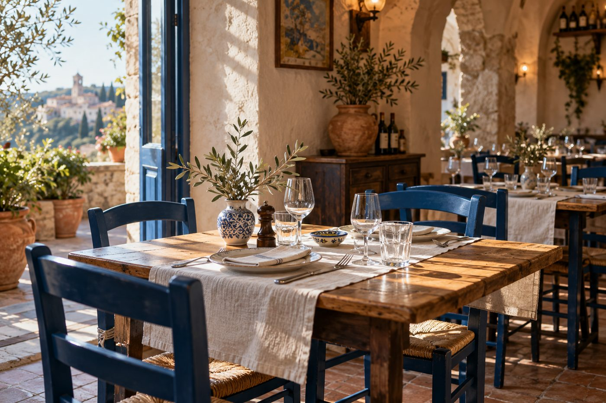

Malá prestávka. Veľká chuť.
Krémová burrata, bazalka, olivový olej. Alergény: 7.
Grilovaný chlieb, paradajky, cesnak. Alergény: 1.
Čerstvé cestoviny, pomaly varené ragú. Alergény: 1, 3, 7, 9.
Hubové rizoto, parmezán, tymian. Alergény: 7.
Mascarpone, espresso, kakao. Alergény: 1, 3, 7.
Vanilka a ovocná omáčka. Alergény: 7.
Pár dobrých surovín, čerstvé cestoviny a čas, ktorý si nemusíte merať. Taká je Oliva. Príďte v tomto fiktívnom svete na obed, zostaňte na rozhovor.
Ukážka bez odosielania údajov a bez skutočnej rezervácie.